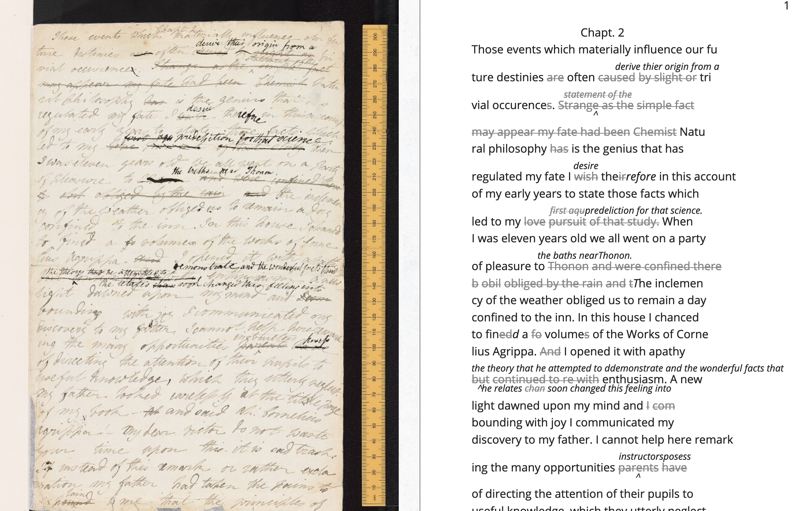
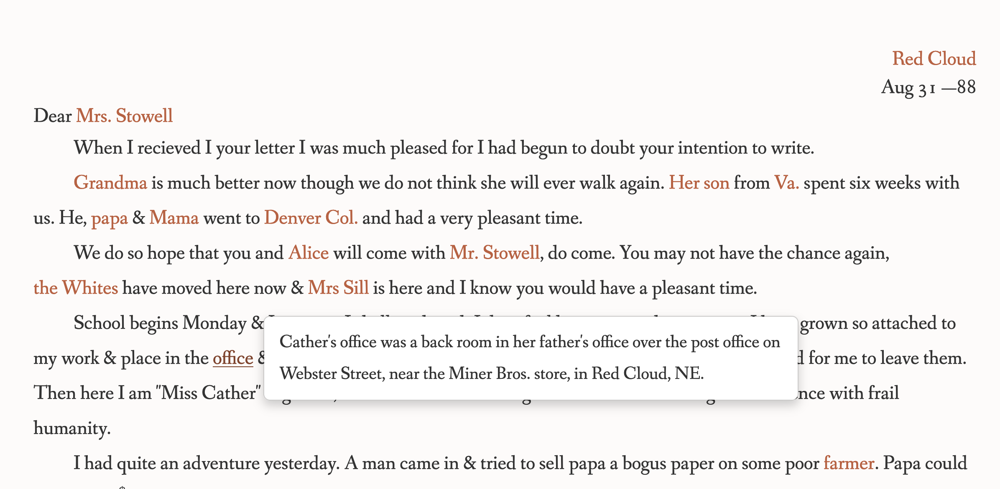
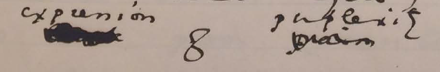
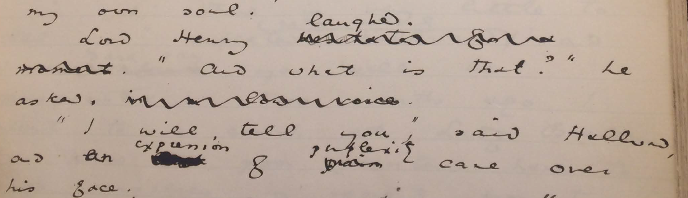
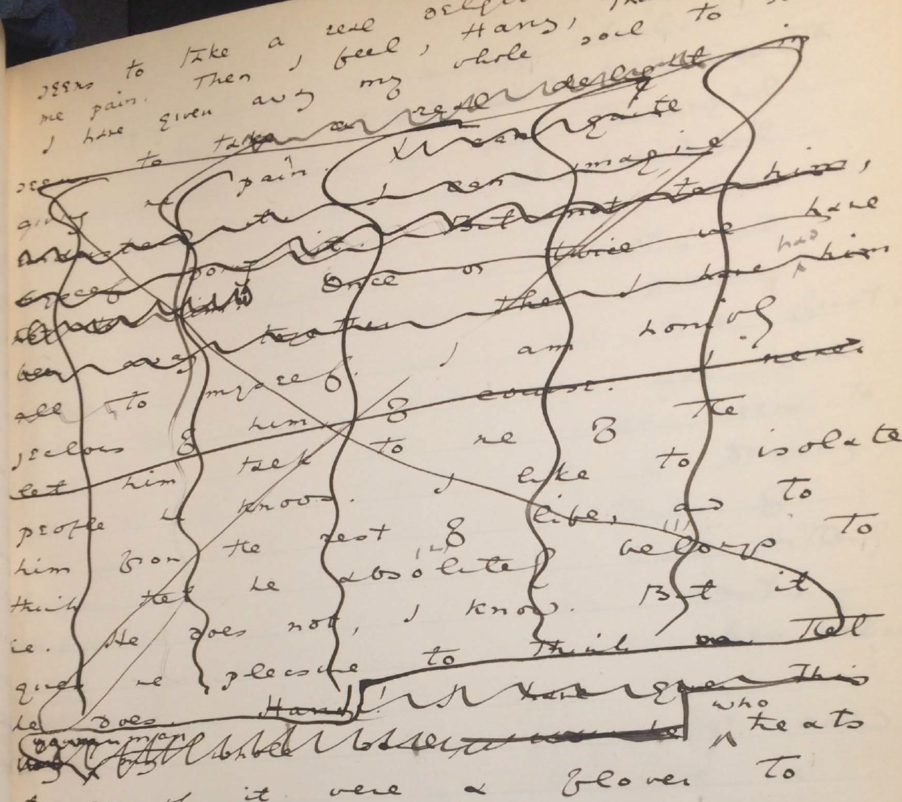
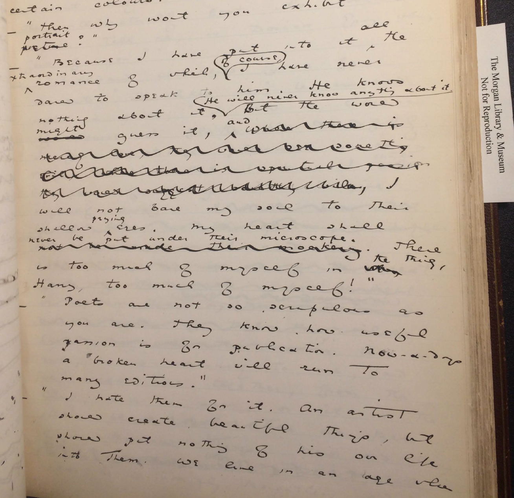
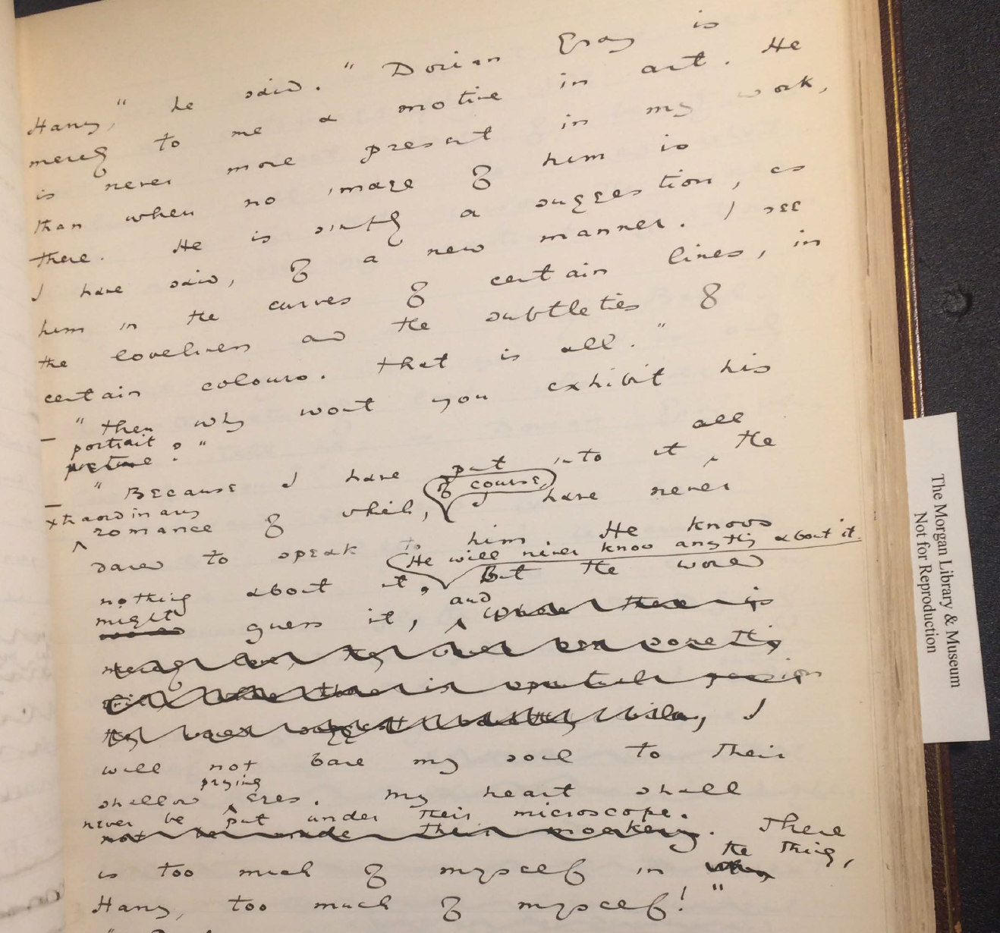
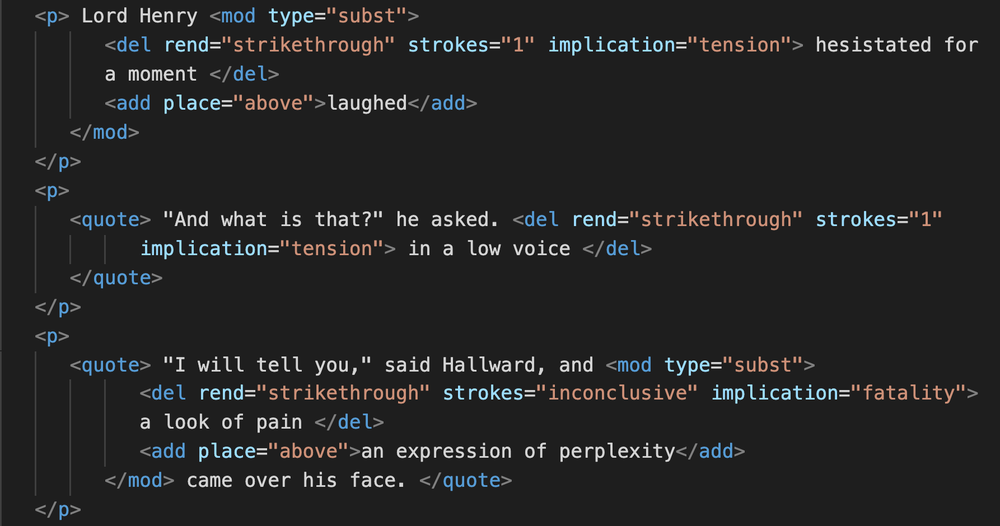

Table of Contents
1 revision notes
1.1 general
1.1.1 TODO more clarity on some of the central arguments
1.1.2 TODO standardize writing style into more formal
1.1.3 TODO review in-text citations
1.1.4 TODO get image rights from Morgan - written permission from copyright
holder and include in caption.
1.2 first review
1.2.1 TODO expand TEI sections: limitations & customization
- TODO how does TEI change the way we read revisions / revision's form;
- TODO how does the tagging release textual meaning within this text;
- TODO how the themes contribute to markup;
- TODO "how this visualizes queer form and its slippery affects or coded
elements";
- TODO connection between number of strokes and themes.
- from review:
"Spend more time on these exciting questions around the limitations of TEI, and on the topics in the last section and conclusion. Not much space is given to the TEI approach the author is using in Wilde’s text in comparison to the other sections, and what the author’s original customisation of TEI achieves. I would suggest a reframing of the article to focus more on how the tagging releases textual meanings within this text in reference to Wilde’s revisions, how TEI offers new methods to read these revisions and their potential forms, how the themes that characterise the revisions operate and contribute to the markup, and how this visualises queer form and its slippery affects or coded elements within the text. The close attention to the varied physical pen strokes and marks on the pages within Wilde’s revisions and the parallels with the conceptual homoerotic elements of the edits is highly interesting and would benefit from more exploration within the article."
1.2.2 TODO Engage with more Queer, DH & Queer DH scholarship
- TODO earlier use of the idea of ‘queer form’ (Amin et al.)
- TODO Susan McCabe’s work on queer historiography (2006)
- DONE Zach Blas’s Queer Technologies
- TODO Roopika Risam’s work on intersectionality and DH
- DONE Jacob Gaboury’s work on speculative histories and historical
absences within queer studies and DH
- TODO Alyson Campbell and Stephen Farrier’s work on definitions of
queerness (2015)
- TODO more engagement with Valerie Traub and David Halperin
- TODO The Texting Wilde Project at the Centre for Digital Humanities at Ryerson University.
- TODO expand some references to critical work in DH & Queer
1.3 second review
1.3.1 TODO Interweave manuscript section with criticism
More secondary literature might be included in the section titled The Manuscript of Dorian Grey, which verges on overly-descriptive at times. Consider drawing on literature and beginning to answer research questions more in this early discussion/outline of the manuscript.
1.3.2 DONE Articulate intervention w/r/t Flanders early on
While the author’s central research question (Julia Flanders’ do we need to queer markup or is markup already queerable?) is clear and effectively explored, article would benefit from clearer illustration of the author’s own research questions. What is the author adding to Flanders’ exploration? How does this article differ from pre-existing literature? What does it add to scholarship?
1.3.3 TODO Style
- TODO revise informality
On p.29, the author writes “I struggle to decide…” and on p.31 “I have tried…” This colloquial language is juxtaposed against otherwise formal writing style and was somewhat jarring.
- DONE remove signposts
Similarly, the author makes too much use of phrases such as “Now I turn…” (p.7) and “Now I will describe…” (p.20). These are unnecessary filler phrases and make the article feel over-signposted at times. Likewise, “I will give a general overview…” (p.2) is unnecessary. Consider simply opening the Textual Scholarship section with “Dominant editorial practices increasingly delimit…”
- TODO syntax
Sentence beginning “Flanders questions markup’s place…” (p.1) – syntax is cumbersome. Consider rephrasing. Perhaps, ‘Flanders’ question raises the issue of markup’s place…’ or similar.
- DONE review block quotes
should page numbers at the end of long, indented quotations be in brackets?
2 two
2.1 Introduction
- TODO create hook?
Literary and textual scholars have long speculated over Wilde's intentions as he wrote and revised his famous novel, The Picture of Dorian Gray (1891). Among the more striking changes to the manuscript (MS) is the suppression of homoeroticism between the three main characters: the painter Basil Hallward, his subject Dorian Gray, and their friend, Lord Henry Wotton.
This project examines in detail Wilde's revisions to the MS's homoerotic elements by using a digital tool that allows researchers to mark and describe each revision. I follow the electronic editing standard called the Text Encoding Initiative (TEI) to encode or "mark up" the deletions, additions, and alterations that Wilde makes to obscure the /MS/’s homoerotic content. Text encoding with TEI (as explained further below) allows researchers to isolate and describe in detail various features of textual data. In analyzing these changes, I draw from debates in the fields of Textual Scholarship and Queer Historiography, which inform my approach for handling homoerotic subject matter within digital contexts. I draw out a parallel debate from within these fields about what to do with what Electronic Editing scholar Jerome McGann calls our “textual inheritance.”1 The parallel debate across these fields allows me to carve out a methodology for working with TEI to analyze queer literary material.
- DONE expand approaches to Queer DH
This project endeavours to answer a question that plagues the emerging field of Queer Digital Humanities, or "Queer DH." As TEI and Literary Scholar Julia Flanders asks--do we need to queer markup or is markup already queerable? By "already queerable," Flanders refers to TEI's inherent "extensibility," which allows researchers to create custom TEI tags that suit the particular needs of their projects. The potential for customization, according to Flanders, allows researchers to "imagine descriptive systems for identity that would operate in specific contexts (rather than totalizing contexts)… with appropriate places for saying 'there is also something incontestable here.'"2
Flanders question interrogates markup's place between two current approaches in Queer DH: first, the approach that wants to disrupt formal systems by imagining alternative ones; and second, the approach in which queerness is built into computing, is inherent in computational logic. The first approach tends to center around speculative or critical making projects that problematize the constructed nature of technical objects. For example, Zach Blas and micha cárdenas's transCoder, a "queer programming anti-language," features programming functions inspired by Judith Butler like the "destabilizationLoop()" that "breaks apart any process that acts as a continuously iterating power." Another project that probes the possibilities of queering digital tools is "Queer OS: A User’s Manual," which is a set of guidelines that describe how various components of an operating system, such as interfaces, applications, and memory might function unexpectedly within an ethos of queerness.3 As literary scholars Pamela Caughie and Sabine Meyer point out, "Data will always be contextual, limited, and only proximate to any individual identity," and therefore runs against the fundamental elusiveness of the complex gender ontologies.4 The other side of the debate explores how current technological systems and tools already contain elements of queerness and encourage queer modes of analysis. For example, work by Jacob Gaboury explores how the NULL value in computation signals a "refusal to cohere, to become legible" as a built-in option in computational systems. Gaboury explains how the NULL value "corresponds with the epistemological condition of queerness as an excessive illegibility collapsed into an unwieldy frame, an aberrant third-ness within an otherwise normative system of relations."5 And literary scholars like Marion Thain have found in TEI's strict tagging structure the potential for marking the complex multiplicity of queer identity.6
- TODO clean up/incorporate intervention language; queer encoding
In attempt to cut between these debates, this paper identifies one major constraint in using TEI within a "queer encoding" practice. TEI's constraint is that it works best with data that is discrete, rather than smooth or ambiguous data, like the homoeroticism in this text. To engage the rigid structure of the TEI against the text's homoerotic elements, I extend the TEI, offering my own customization that marks Wilde's alterations and deletions according to homoerotic themes which include “intimacy,” “beauty,” “passion” and “fatality.” I find that the fixed nature of the TEI as a naming and bounding tool allows me to trouble the boundaries of queerness in this text. This experiment in "queer encoding" bases the challenge of marking homoerotic elements as a foundation for theorizing queer engagements with computational methods. The payoff of working with markiup is that it brings researchers to reconsider their roles in these acts of labelling: to probe the the impulses and tensions between fixity and fluidity.
2.2 Textual Scholarship
- DONE articulate explicitly why this section, and how it fits with
queer historiography. Productive & restorative will parallel with positions in QH on what to do with queer subjects.
The debates over editorial approaches in the field of Textual Scholarship offer an interesting parallel to those in Queer Historiography on the question of what to do with materials from the past. To answer this question, Textual Scholarship and Queer Historiography offer what I call "productive" and "restorative" approaches toward their subject matter. In Textual Scholarship, these approaches contrast across editorial practices that increasingly delimit the purpose and purview of the editor as a recoverer or preserver of texts, and those practices that permit the authority of the editor as an enabler of textual readings. The history of Textual Criticism first tends toward the restorative approach, which is about "correcting" or aligning text with a prior witness. Then, spurred by the advent of digital technology and the popularization of digital tools, editing more about finding ways to multiply the text's potential forms and readings.
- DONE streamline narrative, cutting down to necessary elements,
taking out deformance (?)
The "restorative approach" begins with the work of Ronald B. McKerrow, a leading twentieth-century Shakespearean scholar, who maintains that the goal of scholarly editing is to preserve authorial intention.7 McKerrow's influential model for "copy-text" editing, which establishes the base-text for editing on an early witness that most closely resembles the author's original intention, eventually gives way to Walter W. Greg's approach that expands critics' purview to more than a single witness.8 Fredson Bowers and Thomas Tanselle advance Greg's work, emphasizing the influence of authorial intention and favoring the "eclectic edition," which depends heavily on the editor's judgment to determine authorial intention from multiple sources.9 Tanselle in particular places a high value in the editor who is the only one able to recognize and handle inevitable textual corruption. Guiding Tanselle's position is his claim that a text is vessel for the ideal "work" that can only be realized by the editor:
Those who believe that they can analyze a literary work without questioning the constitution of a particular written or oral text of it are behaving as if the work were directly accessible on paper or in sound waves… its medium is neither visual nor auditory. The medium of literature is the words (whether already existent or newly created) of a language; and arrangements of words according to the syntax of some language (along with such aids to their interpretation as pauses or punctuation) can exist in the mind, whether or not they are reported by voice or in writing.10
Tanselle explains that act of inscription involves physical tools that ultimately corrupt the pure ideas "in the mind" of the writer. Thus, the writer requires an editor who remains sufficiently distant from the creation and transcription of the text to objectively intimate its true intention.
Toward the end of the 20th century, D.F. McKenzie claims that no single text, regardless of scrupulous editing by the critic, can represent an "ideal" version. McKenzie examines how text, which includes sound and electronic media, takes on new forms and meanings in in their reprinting and reproduction, what he calls the "sociology" of texts. According to McKenzie, the book is never a single object, but a product of a number of human agencies and mechanical techniques that are historically situated: "Every society rewrites its past, every reader rewrites its texts, and if they have any continuing life at all, at some point every printer redesigns them."11 Building on McKenzie's ideas, Jerome McGann explores how this sociological perspective might be expanded into digital editing environments, where electronic formats create opportunities for presenting textual variation. McGann explains that textual criticism in print format is limited because it must conform to its object of study—to the linear and two dimensional form of the codex. By contrast, digital editions can be designed for complex, reflexive, and ongoing interactions between reader and text. McGann notes that his work on the digital Rossetti Archive brought him to repeatedly reconsider his earlier conception and goals, explaining that the archive "seemed more and more an instrument for imagining what we didn’t know."12 McGann's approach replaces Tanselle's fidelity toward authorial intention with a drive to harness the potentiality of textual variation. The transformation of literary material into electronic format becomes a vehicle for a critical analytical method that McGann and Lisa Samuels call "deformative criticism." Deformative criticism works by distorting, disordering, or re-assembling literary material, continually subscribing the text to new configurations, in order to estrange the reader from her familiarity of the text. This estrangement forces the reader to encounter the text in a new way and discover new insights about its formal significance and meaning.
2.3 Queer Historiography
- TODO expand Halperin & Traub positions & add quote
There are two competing approaches to Queer Historiography that parallels the "restorative" and "productive" approaches that I've highlighted in Textual Scholarship. In Queer Historiography, critics debate the extent to which they in the present might adequately know queerness in the past. On the "restorative" side, there is the "Queer Historicist" position, advocated by scholars like David Halperin and Valerie Traub, who maintain that homosexuality is historically constructed, that it means something different today than it does in the past, and that we can get at what it means by tracing the discussions about sex and sexuality over time.13 On the "productive" side are the "unhistoricists," including Jonathan Goldberg, Madhavi Menon, and Carla Freccero, who are wary of historiographical methods that demarcate queer subjectivity across history in ways that imply progress.14 They maintain that although one can not fully know what "queer" is or has meant, one may pursue a method of homohistory, "with all its connotations of sameness, similarity, proximity, and anachronism" (Goldberg, Menon 1609). Goldberg and Menon caution that historiographical methods that attempt to pin down "queer" throughout history have the effect of normalizing queerness: "to produce queerness as an object of our scrutiny would mean the end of queering itself, a capitulation to teleology" (1608).
- DONE combine 2 Love paragraphs into 1
Heather Love refocuses this debate to examine the relationship between the critic and the object of study. Love explains that for the queer critic, "Queer history has been an education in absence: the experience of social refusal and of the denigration of homosexual love has taught us the lessons of solitude and heartbreak" (52). Her methodology takes negative affects like shame, anger, disgust, hatred, disappointment as phenomena that cannot be resolved, recuperated, or rescued by the queer historian regardless of how hard she tries. Rather than attempt fix the past, Love offers the methodology of "feeling backward," an accounting of "the social, psychic, and corporeal effects of homophobia" (2). In "feeling backward," Love is interested in exploring the way that subjects turn away or refuse the critic's attempt to "redeem" or "rescue" them: "I want to suggest a mode of historiography that recognizes the inevitability of a 'play of recognitions' but that also sees these recognitions not as consoling but as shattering" (45). She gives the example of the myth of Orpheus and Eurydice, pointing out that Orpheus prefers to behold Eurydice in the darkness of the Underworld rather than in the sunlight 15. Love explains that this is a crucial lesson for queer critics::
[Eurydice's] specific attraction for queer subjects is an effect, I want to argue, of a historical experience of love as bound up with loss. To recognize Eurydice as desirable in her turn away is a way of identifying through that loss. Such an approach would be consistent with an important aspect of contemporary queer politics, which has tended to define community not as constituted by a shared set of traits, but rather as emerging from a shared experience of social violence. 51
Although Orpheus intends to rescue her, bringing Eurydice into the light of day would transform her into something else, something less desirable.
- TODO clean up the reference to what TEI will allow me to do
Like Textual Scholarship, the field of Queer Historiography is plagued by the problem of what to do with the materials from the past. Although the impulse that Love describes of the queer theorist to "rescue" queer figures from the past evokes Tanselle's aim to "recover" the ideal text in scholarly editing, Love knows this rescue is impossible. She explains:
Such is the relation of the queer historian to the past: we cannot help wanting to save the figures from the past, but this mission is doomed to fail. In part, this is because the dead are gone for good; in part, because the queer past is even more remote, more deeply marked by power's claw… Such a rescue effort can only take place under the shadow of loss and in the name of loss; success would constitute failure. 51
Taking this impossibility as inspiration, one might rethink what to do with, or how to access or preserve, the queer textual inheritance. Love suggests how to begin–by paying attention to negative and elusive affects without trying to convert or transform them to something more intelligible or palatable. Accepting queerness as that which eludes containment, however, may also encourage the critic to plumb the ways that queerness continues to escape critical analysis. One may, borrowing from McGann, explore the ways that technological tools offer opportunities for analyzing text by impose new formal structure and configurations on that text. TEI, as a markup language, is one such tool that allows me to experiment with the potential of marking and delimiting queerness.
- DONE collapse 4 pars on composition history into 2 & MOVE
- DONE smooth composition history which leads to intentions debate
- DONE distinguish project of exploring intentions with productive
- TODO add: 'recovering' intentions or 'producing' something new?
Using the TEI allows me to explore an alterative to debates about Wilde's intensions with revising the story's homoerotic elements. Textual scholars like Donald Lawler, Joseph Bristow, and Nicolas Ruddick claim that Wilde's changes to the manuscript fit within a larger project of aestheticization Wilde undertook as he composed and revised the novel. The events behind the creation of Dorian Gray begin in the summer of 1889, when the story is first solicited from Wilde by the editor of Lippincott’s Monthly Magazine, and ends in the spring of 1891, when it is finally published in book format by Ward, Lock, and Company. In August 1889, Wilde agrees to write a story for John Marshall Stoddart, an American publisher from J.B. Lippincott Company in Philadelphia. Presumably, Wilde works on the manuscript until April or May of 1890, when it is typed and revised before being mailed to Stoddart’s offices in Philadelphia. The surviving manuscript and typescript indicate that Wilde revises his work multiple times, and that Stoddart excises some 500 words from the typescript before it is published in Lippincott's on June 20, 1890.16 This first printing of "The Picture of Dorian Gray," which spans 98 pages over 13 chapters, was widely criticized for its seemingly ambiguous stance on an immoral protagonist. Joseph Bristow, the editor of The Variorum Edition of Dorian Gray, explains that "[Wilde’s] narrative struck the [reviewers] as a work that appeared 'corrupt', displayed 'effeminate frivolity', and dealt 'with matters only fitted for the Criminal Investigation Department/.'"17 Wilde would spend the next several days defending his work in letters to the editors, entering into a public correspondence with them.18
A few months later, in the early spring of 1891, Wilde publishes a "Preface" to "The Picture of Dorian Gray" in The Fortnightly Review. The "Preface," according to scholar Barbara Leckie, "advances an art-for-art’s sake position that attempts to remove the novel from the debate by severing the connection between art and society and… denying the moral force of literature.”19 In a list of concise aphorisms, the "Preface" makes claims such as, "Those who find ugly meanings in beautiful things are corrupt without being charming. This is a fault" and "To reveal art and conceal the artist is art’s aim."20 By these complex and incisive statements, Leckie asserts that "Wilde's strategy is to refocus on art and disparage the focus on the reader by saying that the reader is the one who makes a work immoral."21 Similarly, textual scholar Donald Lawler argues that "the 'Preface' relates to the novel only obliquely by subverting the standards of Philistine art criticism and holding up aesthetic beauty and artistic effect as the only legitimate criteria of critical evaluation."22 Though Wilde may have seen the "Preface" as an opportunity to indict those readers and critics who impose a moral judgement on Dorian, the message is perhaps buried in paradox and contradictions. The effect may be to confuse and distract some readers from realizing that they are the objects of Wilde’s critique. Nicolas Ruddick points out that "the obvious contradiction between the retained episode of the poisonous yellow book and the prefatory aphorism beginning 'There is no such thing as a moral or immoral book' would be offered as one of the delicious paradoxes that might bother only the small-minded."23 Wilde subsequently works on revising the Lippincott’s version of the story for publication by Ward, Lock & Company in April 1891. This new edition contains 20 chapters including the "Preface." Here, Wilde continues to delete and alter passages that express moments of intimacy and romantic passion between the characters. According to the editor of the Uncensored Edition of Dorian Gray, Victor Frankel, significant deletions include passages with explicit homosexual references, promiscuous or illicit heterosexuality, and "anything that smacked generally of decadence."24 Wilde also revises the ending of the novel in order to "heighten Dorian’s monstrosity toward the novel’s conclusion, making clearer the suggestion that Dorian’s destruction of the portrait was only an attempt to destroy 'the evidence' against him."25 In doing this, Frankel argues, Wilde aimed to bring "the novel to a moral conclusion that he thought would silence his critics."26
The textual scholarship on Dorian Gray generally agrees that Wilde supresses the moral of the story by aestheticizing the text. The moral, according to Wilde himself in one of his letters to the St James Gazette, is that "all excess, as well as all renunciation, brings its own punishment."27 Bristow argues that Wilde obscures the moral from the story’s early stages, when he was preparing it for publication in Lippincott’s: “In keeping with the manuscript, in the typescript Wilde proved reluctant… to preserve any statements that might lend unnecessary emphasis to what might be viewed as the implicit moral of the tale.’”28. In addition to emphasizing Dorian's immorality, Lawler adds another purpose to Wilde's revisions—the quality of the writing. According to Lawler, “By Wilde’s shifting his emphasis in the Lippincott’s and in the Ward, Lock & Company Dorian Gray from homosexual passion to aesthetic interest, Basil’s culpability is Dorian’s fall from grace is muffled and reduced finally to that of the author of the detested painting.”29 He also adds that “in most cases the offensive passages shown above in the notes were cut because of their mawkish and sentimental writing as much for their affront to contemporary moral standards.”30
Upending these claims about morality and style, Ruddick offers another perspective on Wilde’s treatment of the homosexual content. Examining the differences between the DG90 and DG91, Ruddick argues that DG90 is the “aesthetically superior” text, because it does a better job than DG91 maintaining a coherence between the story’s two morals. The two parables concern the dangers of vanity and the liberalization of homosexuality: while the overt parable “dramatize[s] the disastrous consequences of the preference of the beautiful at the expense of the good”, the covert parable, by contrast, “explores the destructive effects of the clandestine or closeted life.”31 According to Ruddick, while DG90 creates a disjunction between what he calls the “overt” and “covert” parables, of the story, the revisions in DG91 fail to resolve this flaw. Ruddick contends that Wilde, in DG91, “chose the route of suppression,” reducing the homoerotic elements and including a preface defending art from the moral judgements of the bourgeois critic. 32 Ruddick explains that the two parables appear to associate vanity and closeted homosexuality with corruption: “the appalling changes to Dorian’s painted image in DG90 strongly suggest that the unspeakable practices indulged in by the protagonist are unspeakable in themselves.”33 So, according to Ruddick, Wilde’s later story emphasizes a moral that warns against the dangers of vanity at the expense of one about the liberalization of homosexuality.
The question over Wilde's purpose and intention in revising plays up against the ways that we might work productively with the revisions, to create something that informs its queerness. My work with the TEI allows me to explore precisely how marking up queerness engages with such debates.
2.4 TEI introduction
- DONE combine first two paragraphs which intro TEI
TEI (short for Text Encoding Initiative), is an electronic editing standard for transcribing and editing textual elements so that computers can "read" them. In more technical terms, TEI is a "markup language," that enables users to "mark up" aspects of literary texts that they think are important, like structural elements (chapters, paragraphs, line breaks), physical details about the text (revisions, illegible text) or conceptual elements (like persons or places). All texts are implicitly encoded (or marked up) in the sense of punctuation, capitalization, disposition of letters around the page, even the spaces between words. Created specifically for working with literary material, TEI offers a set of guidelines for transcribing and editing print text or manuscripts into electronic format. Maintained by the TEI Consortium, the guidelines contains rules for using various "tags" to mark up certain textual elements, such as
<line>to indicate a line of text,<del>, to indicate deleted text, and<person>, for a reference to a person. Below is an image of TEI text, in this case the manuscript from Mary Shelley's Frankenstein, digitized and encoded by the Shelley-Godwin Archive (see Fig. 4). Fig 4: Image of the manuscript and diplomatic transcription of Frankenstein from the Shelley-Godwin Archive.
Here is an excerpt of some of the TEI code underlying this diplomatic transcription. Note that the first few lines of the text contained within the
<line>tags, and the deleted text contained within<del>tags. Through this level of detail, TEI facilitates deep and complex description of textual material to facilitate scholarly research.<handShift medium="pen" new="#mws"/> <line>Those events which materially influence our fu</line> <line>ture destinies <del rend="strikethrough">are</del> often <mod> <del rend="strikethrough">caused</del> <del rend="strikethrough">by slight or</del> <add hand="#pbs" place="superlinear">derive thier origin from a</add> </mod> tri </line> <line>vial occurence <del rend="strikethrough">s</del>. <mod spanTo="#c56-0005.01"/> <del rend="strikethrough" next="#c56-0005.02">Strange as the</del>
The above excerpt also includes a
<handShift>tag and@handattribute, which indicate whose "hand" is reponsible for each section of text. This is valuable information for a text that was composed by Mary Shelley, and co-edited by her husband, Percy Shelley. For example, in line 8 of the above TEI excerpt, one can see that Percy Shelley makes an addition within the<add>tag. - DONE remove Willa Cather example
As in the above example, TEI documents resemble an ordered hierarchy or nested tree structure, with the one "root" component and several "branches" that divide into smaller components, which David J. Birnbaum describes as "nodes." This hierarchical nature of the TEI means that all elements in the text must be contained within this bounded structure, where one cannot overlap elements, but only nest them. Note in the below example, where the
<emphasis>tags are contained within the<sentence>tags:<sentence>This is <emphasis>bad</sentence>form.</emphasis> <sentence>This is <emphasis>good</emphasis>form.</sentence>
Though the strict tagging structure of TEI forces encoders to categorize or label textual elements in a way that contains overlapping data, it also encourages them to address more fixed and disambiguated textual elements. Perhaps the most useful aspect about TEI is its customizability. As an extension of XML, or eXtensible Markup Language, specifically made to render humanities textual data, TEI is can be "extended" or customized to suit the needs of each encoding project. Users may create their own tags to describe the particular elements they wish to encode. The Women Writers Project, directed by Julia Flanders, adequately frames how TEI's inherent extensibility can address textual ambiguity. According to the WWP:
Unlike many standardization efforts, the TEI … explicitly accommodat[es] variation and debate within its technical framework. The TEI Guidelines are designed to be both modular and customizable, so that specific projects can choose the relevant portions of the TEI and ignore the rest, and can also if necessary create extensions of the TEI language to describe facets of the text which the TEI does not yet address.
Because TEI is built from a language that allows its users to build their own version of that language, there is potential for representing the elements necessary to a project by customizing these elements on a project-by-project basis.
- TODO incorporate Boyd in some way (?) - maybe in discreteness
- DONE add reference to 'queer encoding'
In order to be standardizable and sustainable across a variety of contexts, TEI imposes a certain fixity on textual data. However, the enforcement of standards for encoding text has its drawbacks, in particular to encoding queer elements. As queer studies scholars (and humanists in general) well know, textual data is open to interpretation, and there are always elements that cannot be contained within rigid categories or delimitations. There are a number of projects that explore the potential of TEI for what Julia Flanders calls "queer encoding." The encoding of queer gender, for example, is one interesting case study. Julia Flanders explains that the
<person>tag, which describes persons referenced within a text, is limited to one gender identity for each person. For scholars working to encode multiple or diverse sexual identities, this data structure creates obstacles. For example, Pamela Caughie and Sabine Meyer attempt to encode gender identity in Man Into Woman, the life narrative of Lili Elbe, also known as the Danish artist Einer Wagner who undertook one of the first gender affirming surgeries in 1930. The attempt to mark up Elbe's complex gender ontology brought Caughie and Meyer against this structural limitation of the TEI, that the "sex" attribute cannot accomodate the plural sexualities and sexual identities:[T]he deeper we got into mark-up, the more evident it became that the categories and hierarchies available to us were inadequate for our task… to identify a male subject who at times presents himself as masquerading as a woman, at others as being inhabited by one, and who eventually becomes a woman, in a life history narrated retrospectively from the perspective of Lili Elbe. 231
Interestingly, the limitations of the TEI forced these scholars to consider the ways that computation works on a deeper level to reify gender as essential. In this project, the fixity that the TEI imposes upon the Elbe as a queer subject brought out the ways that gender is situational and relational across this text.
Other scholars have found advantage in TEI's data structure. While TEI is strict about what constitutes a person–as an entity with one sex, for example–it also enables an approach toward personhood as multiple. Like Caughie and Meyer, Marion Thain also works with a complex writing subject, the late-19th-century English poet, Michael Field. Thain works to encode the diaries of Michael Field, which is a pen name for the lesbian couple, Katharine Bradley and Edith Cooper. According to Thain, Michael Field signifies "the assumed names of two separate women, as well as appearing to signify one single male identity."34 The TEI enables the encoding of multiple identities, which is central for understanding the queerness of the diaries:
[T]he proliferation and slipperiness of names is no mere childish caprice but a core part of the articulation of queer: an unhinging of 'given' or apparently predetermined identity through a strategy that articulates identity as constantly shifting, constructed, and performative. Text encoding can, in a simple but powerful way, help us explore and map this crucial strand of queer identity construction across the diary.35
Thain's approach harnesses the hierarchical nature of the TEI to list the various references to each personage within the
<persName>tag. This<persName>tag allows Thain to "render searchable words not in the text but intimately tied to it. This is not a small issue in a diary in which Katharine Bradley herself is referred to by more than 20 different names."36 By encoding each identity to its proper personage, TEI enables Thain to solve the manage the of multiple identities in this text. - TODO style: smooth idea progression in this paragraph
Why do Caughie and Meyer struggle to encode Elbe's identity while Thain appears to succeed with Field? The answer is that Elbe's identity is plural, while Field's is multiple, and the TEI works best when data, like Fields's, is discrete. As Flanders points out, markup, as a tool for naming, bounding, and containment, works best with information that can be separated into distinct components, rather than smooth information with vague boundaries.37 In other words, as long as identities are distinct and contained within specific entities, TEI can encode them. Thain explains that Michael Field's identity "do[es] not pretend to record the life of a single male, as two different hands record the experience of two clearly differentiated people."38 Elbe's identity, by contrast, is not multiple as much as it is plural, containing several identities whose relationship to each other is ambiguous or continually shifting within one entity. Elbe's relation to gender is smooth, best described qualitatively, as one that alternatively "masquerades" or "inhabits" simultaneous gender ontologies. While a queerness like Fields's might be delineated and contained, in Elbe's there is a quality of blending which the markup, by its nature, means to separate and fix.
2.5 The Manuscript of Dorian Gray
- DONE incorporate segway into looking at Manuscript with TEI
- DONE foreground difficulty of categorizing the revisions
- DONE note about capturing smooth info within fixed data
- DONE add reference to labelling as exercise in queer encoding
For Wilde's text in particular, the rigid structure of the TEI tags offer an opportunity for exploring the potential of bounding and labelling as an exercise in "queer encoding." I have created a customization to experiment with semantic labelling against the demands for fixity and structure within the TEI schema. My customization registers physical and conceptual changes to the manuscript by creating two new attributes to mark the revisions. Fist, to mark the physical traces of Wilde's pen as he struck out portions of the text, I created the new attribute, "strokes" (
@strokesin formal TEI notation), and set its value to a number. Most often, Wilde uses one or two strokes of his pen, although sometimes, the strokes are too heavy or thick to enumerate. For example, in the below image (Fig. 6), where Wilde revises the phrase "look of pain" to "expression of perplexity," Wilde's pen nearly blots out the word "look," while the word "pain" only has one stroke. In this case, I set the@strokesattribute to the value, "inconclusive." Figure 5: Close-up image of detail on MS 9 from The Morgan Library and Museum.
In addition to
@strokes, I also created the new attribute,@implication, and set its value to a number of recurring themes from the deleted text. The themes include: "intimacy," "beauty," "passion," and "fatality," with the additional values of "inconclusive" or "illegible" to describe ambiguous elements.In what follows, I detail my encoding work on the MS. This customization allows me to mark the ways that homoeroticism has been elided or transformed as Wilde prepared the text for publication. That being said, solidifying a formal method for marking queer elements is not the goal of this particular project. Rather, my goal is to use TEI to probe the limitation of such a formal method. Love points out that any attempt to affix queerness in the past "can only take place under the shadow of loss… success would constitute failure" (Love, 2009, p. 51). My work in using the attributes surfaces a formal quality of indeterminacy–the "data structure" for the homoerotic elements is fuzzy or blurred, with boundaries that resist demarcation. Wilde's revisions constitute a spectrum of smooth information, rather than discrete. Here, the difficulty was in engaging the boundedness of the TEI elements, which must encapsulate data, with the indistinctiveness of the queerness of the text. To add another layer of complexity, the strokes also engage with the content of the revisions. Several instances of smooth information, to be captured within a fixed data structure. In order to mark up this text, I have to make imposing decisions on the data.
- TODO INTERWEAVE and smooth TEI with manuscript section
The evocative opening scene, which consists of a lively dialogue between Basil Hallward and Lord Henry Wotton, sets the tone, reveals character dynamics, and lays out the conflict for the ensuing story. In these first few pages, Basil comes across as a sympathetic, sensitive, albeit slightly exasperated artist, who confides to his close friend the powerful influence that Dorian Gray has had upon his life and work. Lord Henry, by contrast, appears as an affable and witty gentleman aesthete, who counters Basil’s confessional utterances with offbeat and pardoxical observations.
A few patterns emerge from the revisions across these pages, which coalesce into a list of themes: intimacy, beauty, passion, and fatality.
First, the revisions work to stifle the emotional tension and physical affection in the dialogue between Basil and Lord Henry, replacing it with a lighter or more neutral tone. Because these revisions generally work to shore up the friendship between Basil and Lord Henry, conveying the fondness in their rapport, they are encoded according to the theme of "intimacy."
Second is the theme of beauty, which mostly concerns revisions where Dorian is reformulated from a romantic object into an artistic subject for Basil's painting.
Third is the theme of passion, which is …..
Fourth, and finally, the theme of fatality, which heavily focus on moments when Basil struggles or hesistates to explain Dorian's influence on his life. Basil conveys a devotion to Dorian which is melodramatic and borders on self-destructive.
But as will be clear, demarcating the individual themes is challenging work. There are blurrings between the themes:
intimacy –> fatality: when such moments get too emotionally intense. beauty –> passion: when descriptions of beauty are infused with an erotic charge. passion –> fatality:
- TODO engaging intimacy and fatality
I will begin with the revisions that suppress suggestions of intimacy between Basil and Lord Henry. In the manuscript, Wilde’s pen slashes through evidence of physical contact, such as on page nine, which describes Basil “taking hold of [Lord Henry’s] hand.”
However, the sense of intimacy between Basil and Lord Henry is inextricable with a hint of fatality. In diminishing the sense of intimacy between the two friends, Wilde also mitigates a foreboding in their conversation, replacing tense pauses with laughter or exchanging dramatic statements and descriptions with more playful ones. Two particularly striking moments depict Basil’s struggle to convey why he cannot exhibit Dorian’s portrait. In the first, Lord Henry encourages Basil to explain his hesitation. Prior to any revisions, the dialogue in the manuscript reads:
“Lord Henry hesitated for a moment. ‘And what is that?’ he asked, in a low voice. ‘I will tell you,’ said Hallward, and a look of pain came over his face. ‘Don’t if you would rather not,’ murmured his companion, looking at him” (MS 9).
The revised version in the manuscript, incorporating the deletions and interlinear additions, reads:
“Lord Henry laughed. ‘And what is that?’ he asked. ‘I will tell you,’ said Hallward, and an expression of perplexity came over his face. ‘I am all expectation Basil,’ murmured his companion, looking at him” (MS 9).
Here, several changes mitigate the emotions of the scene. First, rather than hesitate, Lord Henry laughs, and he no longer speaks “in a low voice": the effect is to overwrite a previously intimate moment with levity. Basil also exchanges his emotional misery for mental confusion when “a look of pain” becomes “an expression of perplexity”. And lastly, Lord Henry, rather than sympathizing with his friend’s difficulty and releasing him from the obligation to explain himself, instead encourages him to speak, “I am all expectation, Basil”. Together, these changes work to lighten the mood of the scene and obscure Basil’s internal suffering.
- TODO look of pain –> fatality, passion?
In using the TEI to encode this passage, I struggled to disambiguate the theme of revision. Below is an image of the manuscript page (Fig. 6) and the TEI markup (Fig. 7).
 Figure 6: Image of passage on MS 9 from the Morgan Library and Museum.
 Figure 7: Image of text encoding for MS 9.
Does the phrase "look of pain" express a sense of passion or fatality? On the one hand, "pain" is a strong feeling, or passion, associated with desire. On the other hand, Basil often draws on pain in his references to the fatality of his attraction to Dorian, as in the following quote, which was deleted: "I feel, Harry, that I have given away my whole soul to someone seems to take a real delight in giving me pain" (MS 23). Adding another layer of complexity to this example, Wilde uses different kinds of strokes for the same phrase. With TEI, it is impossible to mark the variations in strokes without separating the single revision into two instances. Therefore, in marking the strokes, I opted to use the value "inconclusive."
- TODO revise theme of jealousy into fatality? something else?
As part of allaying the intimacy in the dialogue between Basil and Lord Henry, Wilde removes suggestions of jealousy between them. At the end of the first chapter, Basil implores Lord Henry in vague terms to abstain with regard to Dorian. The original version reads:
‘Don’t take away from me the one person that makes life lovely for me. Mind, Harry, I trust you.’ He spoke very slowly, and the words seemed wrung out of him, almost against his will.
‘I don’t suppose I shall care for him, and I am quite sure he won’t care for me,’ replied Lord Henry smiling, and he took Hallward by the arm, and almost led him into the house. (MS 27, 27B, 28)
In this dialogue, the subtextual meaning of Basil’s request—-“Don’t take [Dorian] away from me”—-reveals itself in Lord Henry’s assurance that neither he nor Dorian shall “care for” each other. This response characterizes Basil’s possessiveness over Dorian as a jealous one. However, the source of Basil’s anxiety changes with the next revision, where Wilde gives him more lines of explanation and accordingly alters Lord Henry’s response. The revision thus proceeds:
‘Don’t take away from me the one person that makes life absolutely lovely to me, and that gives my art whatever wonder or charm it possesses. Mind. Harry, I trust you.’ He spoke very slowly, and the words seemed wrung out of him almost against his will.
‘What nonsense you talk,’ said Lord Henry smiling, and, taking Hallward by the arm, he almost led him to the house. (MS 27, 27B)
In this revision, Basil attributes an aesthetic value to Dorian, asserting Dorian’s importance for his art, giving it “whatever wonder or charm it possesses.” And Lord Henry’s response moves from reassurance to dismissal, rejecting Basil’s anxiety as “nonsense”, and ending the scene on a slightly humorous note. By portraying Dorian as an artistic subject and asserting Basil’s anxiety about losing that subject, Wilde evacuates the jealous tension between the two men. And by transforming Lord Henry’s emotional tone from reassurance to light-hearted repartee, the interaction loses its intimacy. The effect is to replace the subtle jealousy and mutual understanding between Basil and Lord Henry with a friendly banter.
- TODO move to intimacy/fatality
The next theme, tension, is related to intimacy. It similarly tempers an intense emotional energy, while also mitigating a sense of anxiety or foreboding. One example occurs on the next page, when Basil is on the verge of revealing the reasons behind his attraction for Dorian. The original dialogue proceeds:
“Lord Henry felt as if he could hear Basil Hallward’s heart beating, and he heard his own breath, with a sense almost of fear. ‘Yes. There is very little to tell you,’ whispered Hallward, ‘and I am afraid you will be disappointed. Two months ago…’” (MS 10).
The manuscript’s revised version reads:
“Lord Henry felt as if he could hear Basil Hallward’s heart beating, and he wondered what was coming. ‘Yes. There is very little to tell you,’ whispered Hallward rather bitterly, ‘and I dare say you will be disappointed. Two months ago…’” (MS 10).
Here, rather than draw attention to Lord Henry’s breathing, Wilde mentions Lord Henry’s “wonder” about Basil’s pending explanation, shifting Lord Henry’s sense of anticipation from fear to curiosity. He also makes slight changes to Basil’s delivery: in the revised version, Basil speaks “rather bitterly” and uses the expression “I dare say” rather than “I am afraid”. Both changes diminish the confessional tone that originally precedes Basil’s revelation about Dorian Gray.
- TODO assert that 'beauty' becomes more precise, not less
Often throughout this chapter, Wilde cuts through individual words and replaces them with ones that are less precise and suggestive, distracting from the original connotation. He focuses this type of revision on Basil’s dialogue, particularly when Basil speaks about his passionate attachment to Dorian, and the effect of Dorian's beauty upon his art. Here, Wilde will trade expressive nouns with words that convey relatively weaker or less specific descriptions. For example, in the sentence “Every portrait that is painted with passion is a portrait of the artist, not of the sitter”, Basil replaces “passion” with “feeling” in the manuscript (MS 9), exchanging the romantic connotation with a more general one.
In addition to "passion," Wilde often replaces the word "Beauty" in Basil's references to Dorian. Wilde revises: “Suddenly I found myself face to face with the young man whose beauty had so stirred me” to “Suddenly I found myself face to face with the young man whose personality had so strangely stirred me” (MS 13, my emphasis). The replacement of “beauty” with “personality” allows Basil to completely avoid mentioning Dorian’s physical appearance, and the addition of “strangely” serves to mystify Dorian’s influence over Basil. Throughout the chapter, Wilde makes several more revisions of the word “beauty” that relate directly to Dorian: on page six, he replaces “Dorian Gray’s beauty” with “Dorian Gray’s good looks”; and on page 18, he exchanges “the beauty of Dorian Gray” with “the face of Dorian Gray”. The decisions here to replace “beauty” with references to Dorian’s “face” or his “good looks” maintain the emphasis on the physical while muting the suggestive power of “beauty” in the abstract. In doing so, it rids the text from the connotations that generally accompany “Beauty,” including the ideal, the charming, and the alluring, to instead convey more specific descriptions of visual attractiveness. By redirecting the attention from suggestive “Beauty” in the abstract and toward Dorian’s specific attributes, these revisions evacuate his mysterious allure, diminishing the overwhelming influence that Dorian holds over Basil.
- TODO add that 'fatality' closely associated with 'passion'
Another pattern in the revisions works to soften the fatality about Basil's intense and consuming devotion to Dorian. First, Wilde takes out Basil’s references to his troubled state of mind. One example occurs when Basil recounts his first meeting with Dorian to Lord Henry. In the original version, Basil admits: “I had a strange feeling that Fate had in store for me exquisite joys and exquisite sorrows. I knew that if I spoke to him, I would never leave him till either he or I were dead. I grew afraid, and turned to quit the room” (MS 12). In the manuscript, Wilde crosses through “never leave him till either he or I were dead” and adds, in superscript, “become absolutely devoted to him, and that I ought not to speak to him.” In removing the reference to Basil’s death, Wilde eliminates the self-consuming quality of Basil's devotion. He again revises a reference to Basil’s death a few pages down, when he professes that “I could not live if I did not see him every day” (MS 17). On the manuscript, Wilde changes the line to read, “I couldn’t be happy if I didn’t see him every day” (MS 17). Here, Wilde again avoids admitting the extent to which Dorian has influenced Basil, tempering the fatality in his attachment to Dorian.
- TODO incorporate strokes: how do they complicate reading/revision
–> the indistinctness of the themes engages the indistinctness of the strokes
Closer to the end of the first chapter, Wilde deletes a rather strangely written passage (see Fig. 1) describing the masochistic and jealous qualities of Basil’s attachment. When explaining to Lord Henry the nature of his devotion, Basil confesses:
…I feel, Harry, that I have given away my whole soul to someone seems to take a real delight in giving me pain. I seem quite adjusted to it. I can imagine myself doing it. But not to him, not to him. Once or twice we have been away together, then I have had him all to myself. I am horribly jealous of him of course. I never let him talk to me of the people he knows. I like to isolate him from the rest of life, and to think that he absolutely belongs to me. He does not, I know. But it gives me pleasure to think that he does, Harry! MS 23
In the manuscript, Wilde crosses out everything after "a real delight in giving me pain" up to "But it gives me pleasure to think it does, Harry!" In doing so, he removes suggestions of Basil’s complicity in his suffering. By withdrawing these lines, Wilde stifles the destructive connotations of Basil’s fatalistic devotion to Dorian.
 Figure 1: Image of the manuscript passage on MS 23 from The Morgan Library and Museum.
My final example concerns a longer passage (see Figs. 2 & 3) that was heavily revised in the manuscript. The treatment of this passage crystallizes the various patterns of revision seen so far—-removing signs of intimacy, diminishing tension in dialogue, references to Dorian's beauty and Basil's passion and fatality. The passage in the manuscript bears quoting in full. Prior to any revisions, it reads:
‘You remember that landscape of mine… It is one of the best things I have ever done. And why is it so? Because, while I was painting it, Dorian Gray sat beside me, and as he leaned across to look at it, his cheek just brushed my cheek. The world becomes young to me when I hold his hand, as when I ask him the [illegible].’
‘Basil, this is [illegible] you must not talk [illegible] [illegible] his power, [indecipherable] to make yourself the [illegible] slave! It is worse than wicked, it is silly. I hate Dorian Gray.’
Hallward got up from the seat, and walked up and down the garden. A curious smile curled his lips. He seemed like a man in a dream. After some time he came back. ‘You don’t understand, Harry…’ he said. ‘Dorian Gray is merely to me a motive in art. He is never more present in my work then when no image of him is there. He is simply a suggestion, as I have said, of a new manner. I see him in the curves of certain lines, in the loveliness and subtleties of certain colours. That is all.’
‘Then why won’t you exhibit his picture?’
‘Because I have put into it the romance of which I have never dared to speak to him. He knows nothing about it, but the world might guess it, where there is merely love, they would see something evil, where there is spectacular passion, they would suggest something vile.' MS 20-21
Many of these lines are crossed out, some so heavily, that entire phrases are illegible, as indicated by the tags. What remains legible, however, suffices to draw some conclusions about Wilde’s revision practice. In the first paragraph, the section from “and as he leaned across” to the end of the paragraph is crossed out in a likely attempt to remove evidence of physical intimacy (“his cheek just brushed my cheek”) and suggestions of romance (“the world becomes young to me when I hold his hand”). While some of this paragraph is legible, the next one, by contrast, is almost completely blotted out. From what I can gather, it consists mostly of Lord Henry’s condemnatory and jealous protestations–"his power," "to make yourself the… slave!" and "I hate Dorian Gray." In striking through these lines, Wilde obscures Lord Henry’s exasperation about Basil succumbing to Dorian’s charms. Most of the third paragraph eludes erasure, and is preserved in the manuscript: here, Basil finally explains the precise influence that Dorian has upon his art–as an ideal that inspires and stimulates beauty in the natural world. Subsequently, in the final paragraph, Wilde again obscures much of language, particularly this revelatory line: "where there is merely love, they would see something evil, where there is spectacular passion, they would suggest something vile." With this admission, Basil’s meaning throughout the passage attains clarity: Dorian Gray inspires a powerful, romantic attraction in Basil that suffuses all of his work with beauty and wonder.
 Figure 2: Image of manuscript passage beginning on MS 20 from The Morgan Library and Museum.
 Figure 3: Image of manuscript passage ending on MS 21 from The Morgan Library and Museum.
More examples occur across the themes of intimacy and affection. In the below passage (see Fig 8), Wilde revises the phrase "and as he leaned across to look at it, his cheek just brushed my cheek" to "and as he leaned across to look at it, his hair just touched my hand" (MS 20). Due to its physical nature, I categorized this particular phrase as "affection." However, because it is part of a longer passage, I modified my label to "passion," which is a more general term that includes other revisions done in the same sentence, such as "The world becomes young to me when I hold his hand" (MS 20).
 Figure 8: detail on MS 20 from the Morgan Library and Museum.
To fix these ambiguities, I could tag them with both or even multiple values. But such tagging would dilute the analytical utility of the TEI, which is meant to be decisive rather than exhaustive. On the other hand, I could be even more specific, employing qualitative markers that are ever more precise, "tenderness" in addition to "affection," or "ardor" and "devotion," in addition to "passion," for example. However, the more specific the tags, the less possibility of finding connections between them, and the more demarcated the possibilities for analysis.
Together, the changes between the different textual witnesses suggest that Wilde had a deliberate purpose in revising the first chapter of the story. It appears that the revisions work to obscure or diminish the homosexual and homoerotic elements by turning Dorian into an aesthetic object. They achieve this goal in three ways: first, by removing the negative connotations of Basil’s attachment to Dorian, particularly the consuming intensity of his devotion; second, by easing the tension surrounding his dialogue with Lord Henry, sometimes lightening the heavier moments with a touch of comedy; and finally, by emphasizing Dorian as an ideal subject for art, expanding his appeal from the romantic and the physical toward a spiritual influence that inflects his surroundings. In these ways, the revisions turn something troubling and potentially fatal into a celebration of ideal beauty. This result also accords with Ruddick’s claim, that the revisions emphasize a moral that warns against the dangers of vanity at the expense of a moral about the liberalization of homosexuality. It seems that, by tempering Basil’s passion and aestheticizing Dorian, Wilde is able to remove the negative consequences of passion and replace them with the ones of worshipping beauty. However, while the earliest version of the story appears to associate homosexuality and vanity with corruption, it also warns against interpreting passion as a negative quality. Indeed, Basil makes precisely this argument when he explains to Lord Henry his reason for not exhibiting the portrait: “where there is merely love, they would see something evil, where there is spectacular passion, they would suggest something vile” (MS 21). This line, struck from the manuscript, leaves one with the suspicion that Wilde may have silenced the homosexual themes for the same reason that Basil could not exhibit his portrait.
2.6 Conclusion: Toward A Queer Form
My approach in customizing the TEI is to handle queer elements in a such way that engages the lessons from queer history. This approach attends to the slippery themes that elude containment, such as intimacy and affection, or passion and fatality. Heather Love's characterization of queerness as "always bound up with loss," enables textual scholars to accept that queerness is, like Eurydice, already turning backward (51). That the attempt to "rescue" or "recover" certain textual elements will only lead to inevitable failure. TEI in particular encourages the encoder to impose a level of fixity on text. Therefore, I have tried to tag the homoerotic elements in a way that enables them to retain some of their elusiveness, without attempting to pin down or transform their elusiveness into something more intelligible and palatable.
My question, moving forward, is how do we label something as fixed and at the same time maintain its fluidity? How might we approach tagging as a way of releasing textual meaning, rather than attempting to "recover" or "rescue" what is turning backward within the composition history? Drawing from Jerome McGann and Lisa Samuel's idea of deformance, we might look at the formalizations produced by this TEI schema not for what it reveals about Wilde's intentions, but for how it releases potential readings of the composition history. Such an approach would redeploy the categorization and labelling of markup toward speculative experimentation, exploring what Kadji Amin, Amber Jamilla Musser, and Roy Pérez describe as “queer form”— “the range of formal, aesthetic, and sensuous strategies that make difference a little less knowable, visible, and digestible.” Keeping a critical awareness of the TEI limitations, one might use the tool to mark and visualize queer form, particularly the elusive affects, repressed desires, and other coded elements of queerness within this text. When grappling with the strict structure of the TEI, running up against what can and cannot be encoded, one recognizes what escapes or eludes our structures for understanding and analyzing queerness to rework those forms into new configurations.
3 commands
c-c c-x f => create a new footnote c-u c-c c-x f then select sort then renumber footnotes
block quotes: #+BEGINQUOTE & #+ENDQUOTE
4 Works Cited
Amin, Kadji, Amber Jamilla Musser, and Roy Pérez “Queer Form: Aesthetics, Race, and the Violences of the Social” ASAP/Journal, Volume 2, Number 2, May 2017, p. 235.
Barnett, Fiona, Zach Blas, Micha Cárdenas, Jacob Gaboury, Jessica Marie Johnson, and Margaret Rhee, "QueerOS: A User’s Manual." Debates in the Digital Humanities, eds Matthew K. Gold and Lauren Klein. University of Minnesota Press. 2016.
Birnbaum, David J. “What is XML and Why Should Humanists Care?” Digital Humanities. 2021. http://dh.obdurodon.org/what-is-xml.xhtml
Caughie, Pamela L., Emily Datskou, and Rebecca Parker. "Storm Clouds on the Horizon: Feminist Ontologies and the Problem of Gender." Feminist Modernist Studies 1.3 (2018): 230-242.
Flanders, Julia. "Encoding Identity." Keynote, Queer Encoding: Encoding Diverse Identities, the Digital Scholarship Center, Temple University. April 28, 2017.
Goldberg, Jonathan, and Madhavi Menon. “Queering History.” PMLA, vol. 120, no. 5, 2005, pp. 1608–1617.
Greg, Walter W. "The Rationale of Copy-Text," Studies in Bibliography Vol. 3, 1950/1951, pp. 19-36.
Halperin, David M. "How to Do the History of Male Homosexuality." GLQ: A Journal of Lesbian and Gay Studies, vol. 6 no. 1, 2000, p. 87-123.
Jewell, Andrew. The Willa Cather Archive. U of Nebraska-Lincoln, 2004-2013. Web. 13 Dec. 2012.
Lawler, Donald L. An Inquiry into Oscar Wilde's Revisions of the Picture of Dorian Gray. New York, Garland Pub, 1988.
Leckie, Barbara. “The Novel and Censorship in Late-Victorian England.” The Oxford Handbook of the Victorian Novel. Corby: Oxford University Press, 2013.
Love, Heather. Feeling Backward: Loss and the Politics of Queer History. Harvard University Press, 2009.
McGann, Jerome. "Radiant Textuality: Literary Studies after the World Wide Web." Springer, 2016.
McKenzie, D.F. Bibliography and the Sociology of Texts. Cambridge University Press, 1999
Ruddick, Nicolas. “‘The Peculiar Quality of my Genius’: Degeneration, Decadence, and Dorian Gray in 1890-1891.” Oscar Wilde: The Man, His Writings, and His World. ed. Robert N Keane. New York: AMS Press, 2003. pp.125-137.
The Shelley-Godwin Archive. University of Maryland, College Park. Maryland Institute for Technology in the Humanities (MITH).
Tanselle, G. Thomas. "A Rationale of Textual Criticism." Publication of the ASW. 1992.
Thain, Marion, "Perspective: Digitizing the Diary - Experimentsin Queer Encoding," Journal of Victorian Culture, Volume 21, Issue 2, 1 June 2016, Pages 226–241.
“To the Editor of the St James Gazette,” 25 June 1890. Rpt. in Wilde, Oscar, and Michael Patrick Gillespie. The Picture of Dorian Gray: Authoritative Texts, Backgrounds, Reviews and Reactions, Criticism. 2nd ed. ed., New York, W.W. Norton, 2007. pp. 355-356.
Traub, Valerie. “The New Unhistoricism in Queer Studies.” PMLA, vol. 128, no. 1, 2013, pp. 21–39
Wilde, Oscar. The Picture of Dorian Gray: Original Manuscript. 1889–90. MS. Morgan Library & Museum, New York, NY.
Wilde, Oscar, and Joseph Bristow. The Complete Works of Oscar Wilde. Vol. 3. Oxford, Oxford University Press, 2000.
Oscar, Wilde, and Nicholas Frankel. The Picture of Dorian Gray: An Annotated, Uncensored Edition. Harvard University Press. 2011.
Wilde, Oscar, and Michael Patrick Gillespie. /The Picture of Dorian Gray: Authoritative Texts, Backgrounds, Reviews and Reactions, Criticism/. 2nd ed. ed., New York, W.W. Norton, 2007. Wilde, Oscar, and Nicholas Frankel. The Picture of Dorian Gray : An Annotated, Uncensored Edition. Cambridge, Mass., Belknap Press of Harvard University Press, 2011.
Footnotes:
McGann, Jerome. Radiant Textuality: Literature after the World Wide Web, Palgrave, 2001, xi.
Flanders, Julia. "Encoding Identity." Keynote, Queer Encoding: Encoding Diverse Identities, the Digital Scholarship Center, Temple University. April 28, 2017.
Blas, Zach and micha cárdenas, Queer Technologies / TransCoder, 2007-2012. Barnett, Fiona, Zach Blas, Micha Cárdenas, Jacob Gaboury, Jessica Marie Johnson, and Margaret Rhee, "QueerOS: A User’s Manual," Debates in the Digital Humanities, 2016.
Caughie, Pamela L., Emily Datskou, and Rebecca Parker. "Storm Clouds on the Horizon: Feminist Ontologies and the Problem of Gender." Feminist Modernist Studies 1.3 (2018): 238.
Gaboury, Jacob, "Becoming NULL: Queer relations in the excluded middle," Women & Performance: a Journal of Feminist Theory 28.2 (2018): 143-158. Also see Gaboury, Jacob, "A Queer History of Computing," Rhizome.org, 2013.
Thain, Marion, "Perspective: Digitizing the Diary - Experimentsin Queer Encoding," Journal of Victorian Culture, Volume 21, Issue 2, 1 June 2016, Pages 226–241.
McKerrow, R B. Prolegomena for the Oxford Shakespeare: A Study in Editorial Method. Oxford: Clarendon Press, 1939.
Greg, W. W. “The Rationale of Copy-Text.” Studies in Bibliography 3 (1950): 19–36.
Bowers, Fredson. Textual & Literary Criticism, Cambridge University Press, 1959. Tanselle, Thomas. “A Rationale of Textual Criticism,” University of Pennsylvania Press, 1989.
Tanselle, Thomas. “A Rationale of Textual Criticism,” University of Pennsylvania Press, 1989, pp. 16-17.
McKenzie, D.F. Bibliography and the Sociology of Texts, British Library, 1986. p 25.
McGann, Radiant Textuality, 82.
See Traub, Valerie. “The New Unhistoricism in Queer Studies.” PMLA, vol. 128, no. 1, 2013, pp. 21–39; and Halperin, David M. "How to Do the History of Male Homosexuality." GLQ: A Journal of Lesbian and Gay Studies, vol. 6 no. 1, 2000, p. 87-123.
See Goldberg, Jonathan, and Madhavi Menon. “Queering History.” PMLA, vol. 120, no. 5, 2005, pp. 1608–1617; and Freccero, Carla, et al. “Historicism and Unhistoricism in Queer Studies.” PMLA, vol. 128, no. 3, 2013, pp. 781–786.
As the condition of rescuing his lover Eurydice from Hades, Orpheus must not look at her until they exit the Underworld and re-emerge into the sunlight. Unable to restrain himself, Orpheus turns to gaze at Eurydice as they are about to pass through the threshold. In this glimpse he manages to catch of his lover, she is already shrinking away, into the darkness where she will be forever imprisoned.
Though this paper considers some of Stoddart’s editorial influence on the typescript, see pp. 40-54 in Nicolas Frankel's The Picture of Dorian Gray: An Annotated, Uncensored Edition for a more complete accounting of his role in preparing the typescript for publication. Frankel's edition attempts to reinstate Wilde’s original intentions in the typescript, "representing the novel as Wilde envisioned it in the spring of 1890, before Stoddart began to work his way through the typescript with his pencil and before Wilde’s later self-censorship of the novel" (21).
Wilde, Oscar, and Joseph Bristow. The Complete Works of Oscar Wilde. Vol. 3. Oxford, Oxford University Press, 2000, p. xviii.
See the Norton Critical Edition of The Picture of Dorian Gray, ed. Michael Patrick Gillespie, for a selected list of full-length reviews from The Scots Observer, The St James Gazette and the Daily Chronicle, and Wilde’s responses.
Leckie, Barbara. “The Novel and Censorship in Late-Victorian England.” The Oxford Handbook of the Victorian Novel. Corby: Oxford University Press, 2013. p. 171.
Wilde, Oscar, and Michael Patrick Gillespie. /The Picture of Dorian Gray: Authoritative Texts, Backgrounds, Reviews and Reactions, Criticism/. 2nd ed. ed., New York, W.W. Norton, 2007. Wilde, Oscar, and Nicholas Frankel. The Picture of Dorian Gray : An Annotated, Uncensored Edition. Cambridge, Mass., Belknap Press of Harvard University Press, 2011. p0. 3-4.
Lecklie, "The Novel," 173.
Lawler, Donald L. An Inquiry into Oscar Wilde's Revisions of the Picture of Dorian Gray. New York, Garland Pub, 1988. p. 16.
Ruddick, Nicolas. “‘The Peculiar Quality of my Genius’: Degeneration, Decadence, and Dorian Gray in 1890-1891.” Oscar Wilde: The Man, His Writings, and His World. ed. Robert N Keane. New York: AMS Press, 2003. pp.125-137. p. 131.
Oscar, Wilde, and Nicholas Frankel. The Picture of Dorian Gray: An Annotated, Uncensored Edition. Harvard University Press. 2011. pp. 47-48.
Ibid., 30.
Ibid.
“To the Editor of the St James Gazette,” 25 June 1890. Rpt. in Wilde, Oscar, and Michael Patrick Gillespie. The Picture of Dorian Gray: Authoritative Texts, Backgrounds, Reviews and Reactions, Criticism. 2nd ed. ed., New York, W.W. Norton, 2007. pp. 355-356.
Wilde, Oscar, and Joseph Bristow. The Complete Works of Oscar Wilde. Vol. 3. Oxford, Oxford University Press, 2000. p. xxxvii.
Lawler, An Inquiry, 26.
Ibid., 65.
Ruddick, "The Peculiar Quality," 126-128.
Ibid., 133.
Ibid., 129.
Thain, Marion, "Perspective: Digitizing the Diary - Experimentsin Queer Encoding," Journal of Victorian Culture, Volume 21, Issue 2, 1 June 2016, p. 228.
Thain, "Perspective." 233.
Ibid., p. 233.
Flanders, "Queer Encoding."
Thain, "Perspective," 229.